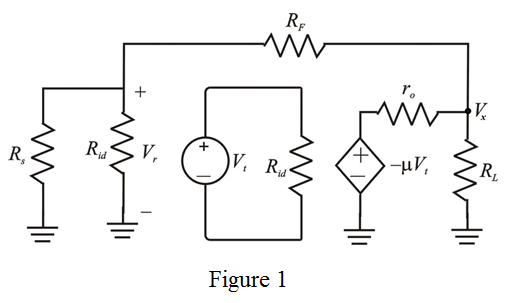

Step 1:
Refer to the circuit diagram of feedback trans-resistance amplifier in Figure 10.27(a) in the textbook.
The small signal equivalent circuit of the amplifier is shown in Figure 1.

Step 2:
The operational amplifier is modeled by an input resistance,  , an output resistance,
, an output resistance,  and an open-circuit voltage gain,
and an open-circuit voltage gain,  .
.
Derive the expression for loop gain of the amplifier.
Define loop gain of the amplifier.
Use voltage division rule to write the expression for voltage  .
.
Step 3:
Use voltage division rule to write the expression for voltage .
Substitute for  in the equation.
in the equation.

From the loop gain definition,
Thus the expression for loop gain of the amplifier  is
is
.
Step 4:
At, the loop gain becomes:
Substitute  for
for  ,
,  for ,
for ,  for and for in the equation.
for and for in the equation.
Simplify further to obtain the loop gain.
Thus, the loop gain of trans-resistance amplifier  is .
is .
This value is same as that in Example 10.7.